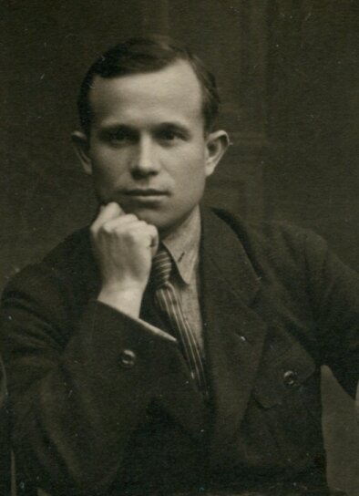
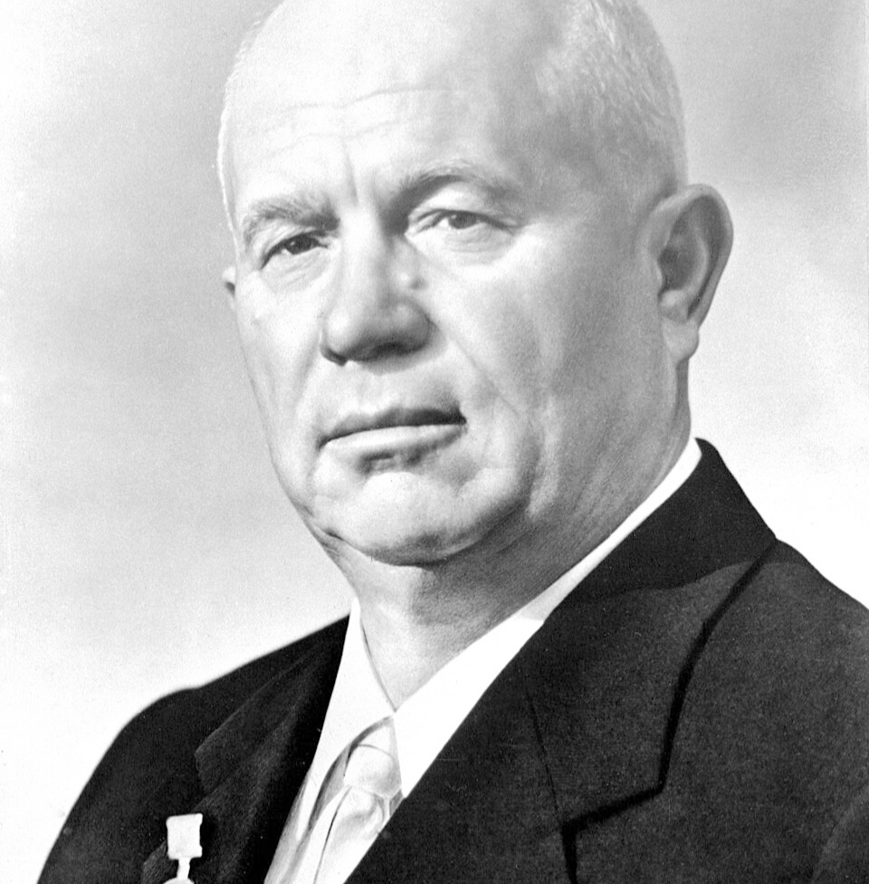
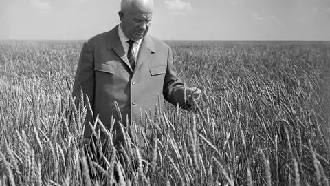
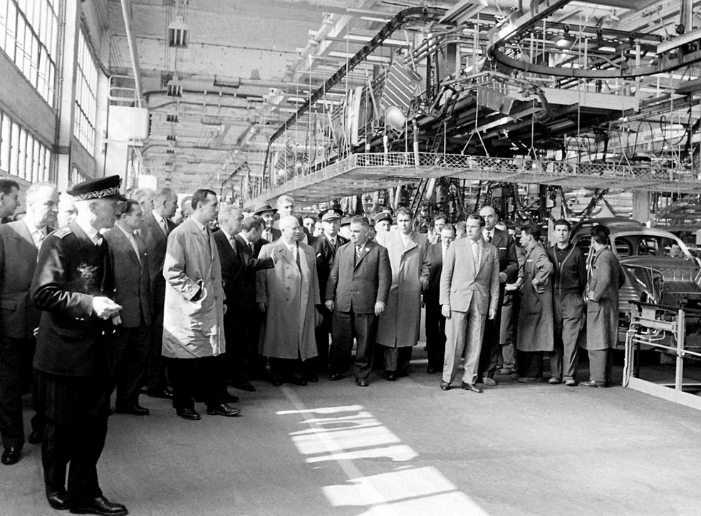
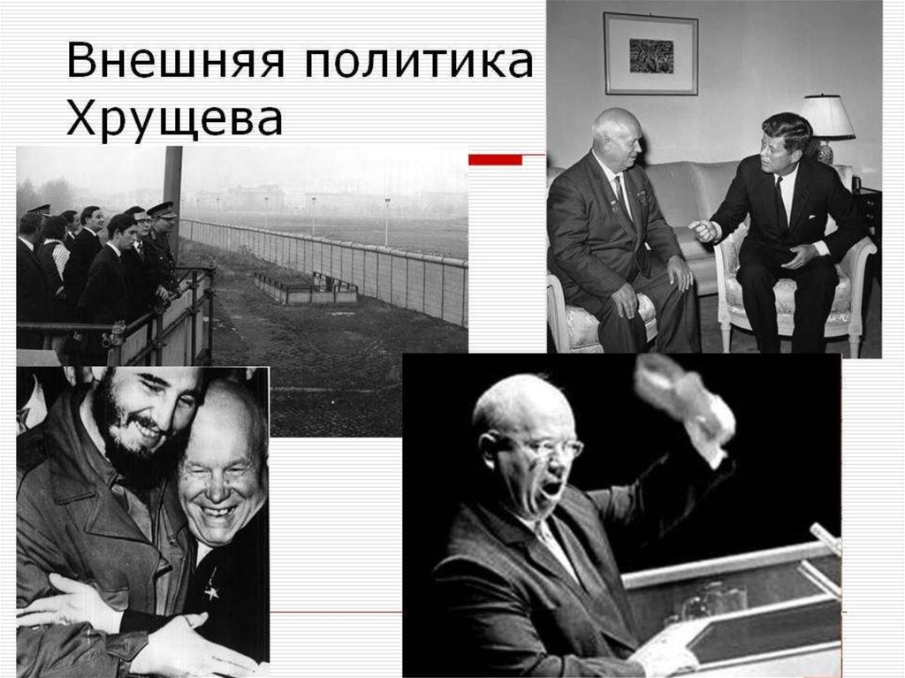
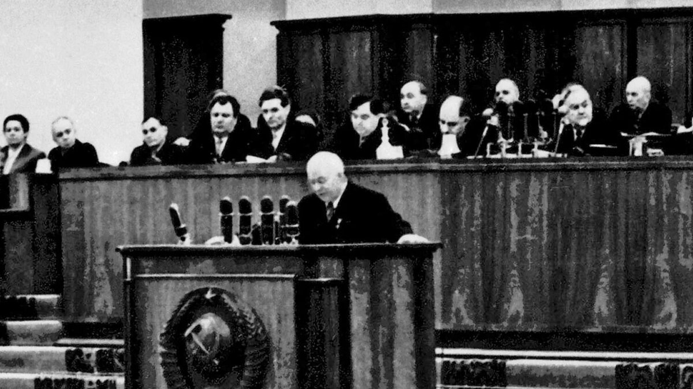
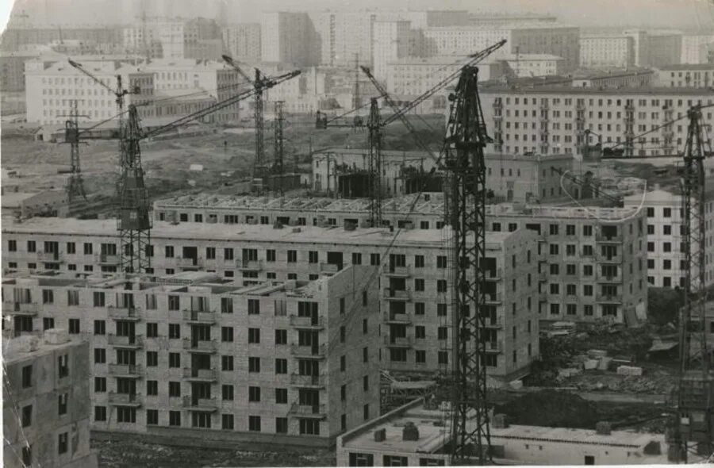
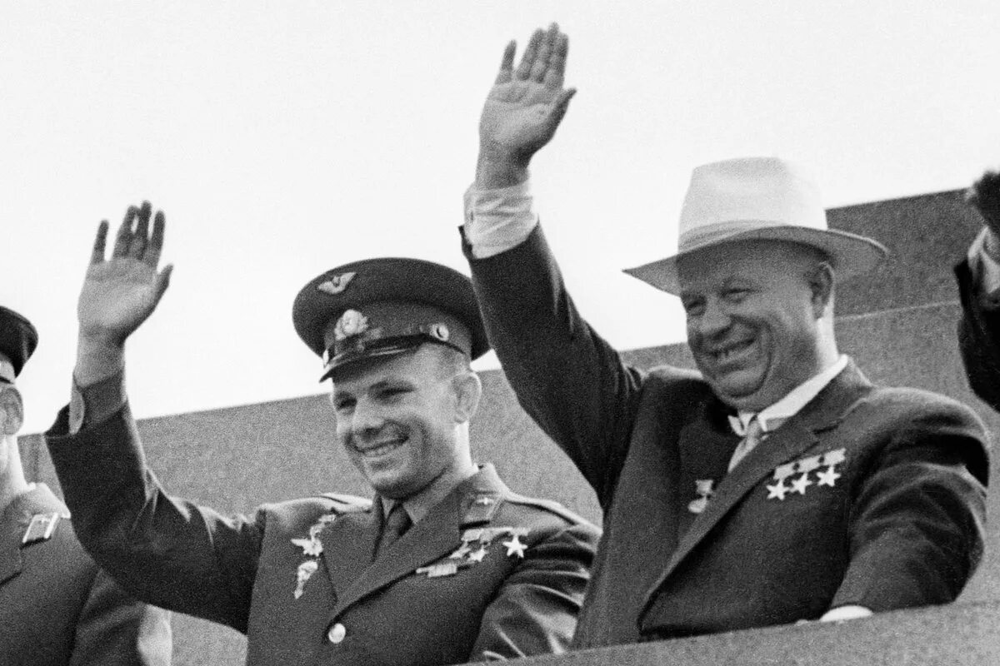

Корни: Становление личности

Ранние годы и работа
- Родился в 1894 году в селе Калиновка.
- Работал пастухом, шахтером, заводчанином.
- Окончил три класса церковно-приходской школы.
- Личность: решительная, энергичная, упорная (холерик).
Партийная карьера
- Во время Гражданской войны вступил в партию большевиков, был политкомиссаром.
- Отучился на рабфаке, затем в Донецком индустриальном институте и Промышленной академии в Москве.
- Был секретарем МГК ВКП(б) и членом Политбюро.
- В годы ВОВ — член Военных советов фронтов, генерал-лейтенант (1943).
- Секретарь ЦК КПСС (с 1949). В 1953 г., после смерти И.В. Сталина, вступил в борьбу за власть.
Ствол: Приход к власти

Утверждение во главе государства
- Арест Л.П. Берии (1953): Устранение главного конкурента в борьбе за власть при поддержке Г.К. Жукова.
- Отставка Г.М. Маленкова (1955): Смещение Маленкова с поста Председателя Совета Министров СССР, окончательное закрепление лидерства Хрущева.
Крона: Ветви политики

Ветвь Экономики (Сельское хозяйство)
- Освоение целины (1954).
- Кукурузная эпопея (1956-1964).
- Реорганизация МТС в РТС (1958).
- Кризис: массовый убой скота и начало закупок зерна за рубежом (1963).

Ветвь Экономики (Промышленность)
- Открытие Обнинской АЭС — первой в мире (1954).
- Замена министерств совнархозами для децентрализации управления (1957).
- Развитие нефтехимического и машиностроительного комплексов.

Ветвь Внешней политики
- Запад: Визиты в США, договоры о сокращении вооружений (1960-1963), Холодная война и Карибский кризис (1962).
- Соцлагерь: Создание ОВД (1955), подавление восстаний в ГДР (1953) и Венгрии (1956), ухудшение отношений с Китаем.
- Третий мир: Поддержка деколонизации (Египет, Куба).

Ветвь Десталинизации
- XX съезд КПСС (1956): секретный доклад Хрущева о культе личности Сталина.
- Реабилитация жертв репрессий и начало «Оттепели». Критика Сталина, но не самой советской системы.
- Вынос тела Сталина из Мавзолея (1961).
- Шок в обществе и ухудшение отношений с азиатскими соцстранами (КНР).

Ветвь Социальной политики
- Установление 7-часового рабочего дня и повышение зарплат (1956).
- Старт массового жилищного строительства («хрущевки») (1957).
- Введение пенсий для колхозников (1964).
- Общее улучшение материального положения населения.
Ветвь Политических реформ
- Упразднение ГУЛАГа (1960), отделение КГБ от МВД (1954).
- Ослабление централизованной бюрократии, расширение прав союзных республик.
- Передача Крымской области из состава РСФСР в состав УССР (1954).
- XXI (1959) и XXII (1961) съезды КПСС — принятие программы построения коммунизма.

Ветвь Культуры и Науки
- Наука: Триумф космонавтики (первый спутник — 1957, полет Гагарина — 1961).
- Образование: Введение обязательного 8-летнего обучения, отмена платы за обучение в старших классах и вузах.
- Культура: Относительная свобода слова (публикация Солженицына), но при этом сохранение цензуры и гонения на художников-авангардистов и писателей (дело Пастернака).